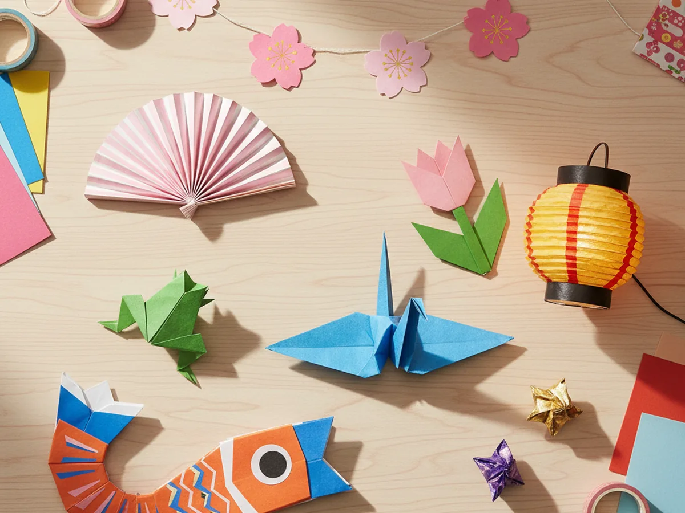
If your kids love folding, snipping, and seeing simple paper turn into something magical, this list is for you. Each Japanese paper craft below is gentle on supplies, friendly for little hands, and full of those quiet wow moments when a flat square suddenly becomes a crane, a star, or a tiny carp swimming through the air. We tested every idea with beginners in mind, so you can sit down with your child and just enjoy the folding together. 🌸
What You'll Need
Most of these ideas use the same handful of basics, so one quick supply gather will carry you through the whole list.
- Origami paper, 100 sheets, 6-inch square, the foundation for almost every fold on this list.
- Construction paper in assorted colors, perfect for lanterns, fans, and bigger projects.
- Washi tape set, the iconic Japanese decorative tape that adds instant charm to any craft.
- Fiskars blunt-tip kids scissors, safe for little hands and easy to control.
- Elmer's washable disappearing purple glue sticks, low-mess and easy for toddlers to use.
- Crayola broad line markers, for adding faces, patterns, and tiny details.
- Optional extras: thin string or twine, small wooden skewers or chopsticks, and a hole punch.
20 Japanese Paper Craft Ideas
1. Origami Paper Crane
The classic crane is the heart of any Japanese paper craft collection, and it is more doable for kids than it looks. Start with one square of origami paper and follow the folds slowly, step by step, with your child copying you. The moment those wings open up and lift, your little one's face will light up like nothing else.
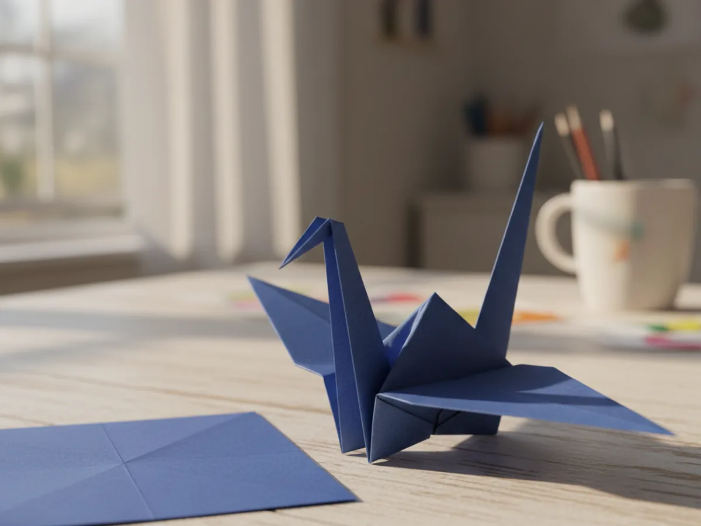
2. Origami Heart
This sweet little fold uses just one square of pink or red origami paper and turns into a flat puffy heart in about six steps. It's a perfect first folding project for younger kids because every crease is easy to spot. Tuck the finished hearts inside lunchboxes or tape them onto a love note for grandma.
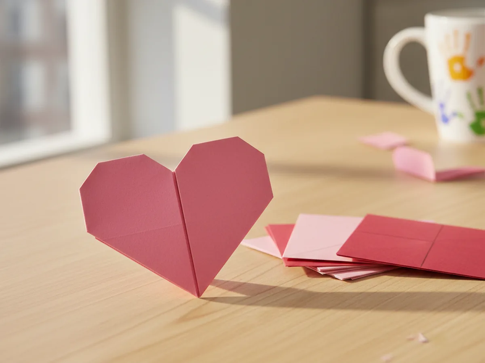
3. Origami Jumping Frog
Fold a green square into a little frog with a bouncy back fold, then press its tail and watch it leap across the table. Kids will spend ages racing their frogs, and you'll probably make a dozen before snack time. This is the kind of easy Japanese paper craft that turns into a full afternoon of giggles.
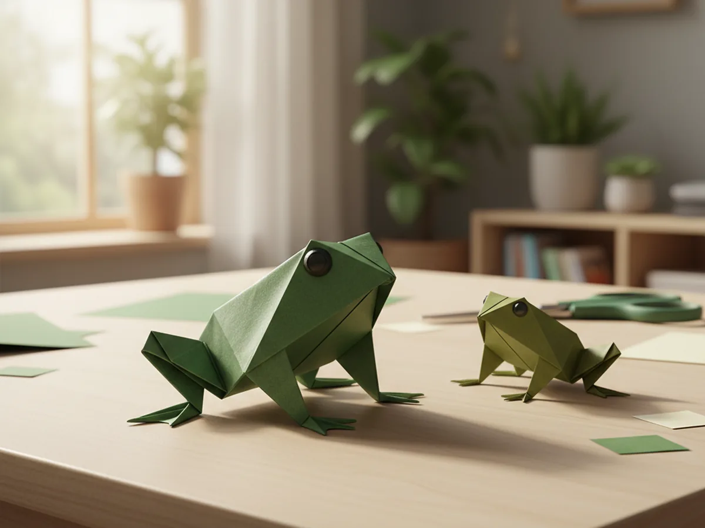
4. Origami Paper Boat
This simple boat fold has been a Japanese childhood favorite for generations. Fold a square or rectangle into the iconic pointed boat shape and float it in the bathtub or kitchen sink. Make a whole fleet in different colors and you have an instant playtime adventure.
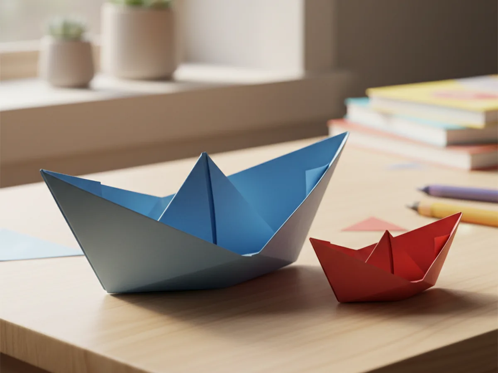
5. Origami Tulip
This two-piece origami tulip uses one square for the bloom and another for the leafy stem. Fold them separately, then slide them together to make a sweet little flower that stands up on its own. A bunch of them in a glass makes the prettiest centerpiece for the kitchen table.
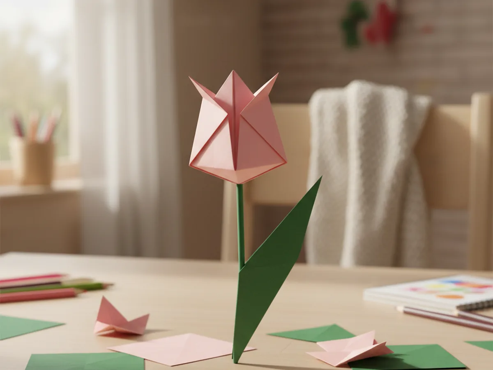
6. Origami Cat Face
One small square folds into the cutest cat face with two pointy ears and a triangle nose. Let your child draw on whiskers, eyes, and a little smile with markers. These are wonderful for taping onto homemade cards or building a whole tiny paper cat family for pretend play.
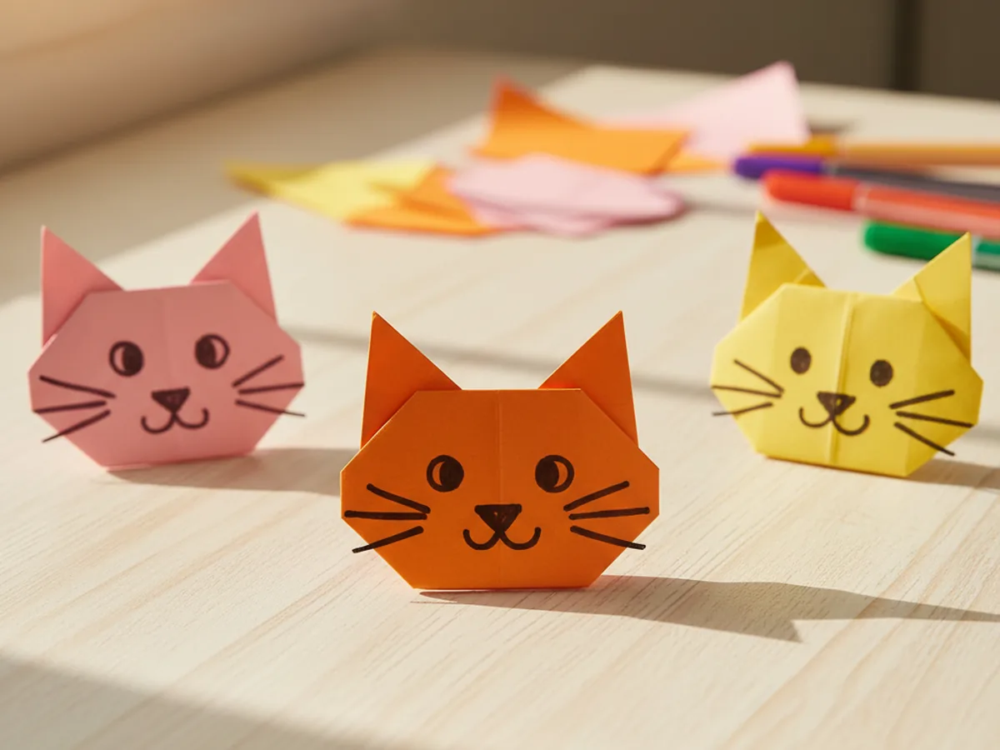
7. Origami Lucky Star
Cut a thin strip of paper, tie a tiny knot at one end, and keep wrapping the strip around itself until you have a small flat pentagon. Pinch the sides gently and the pentagon puffs up into a perfect three-dimensional lucky star. Fill a little glass jar with hundreds of them and you have a magical homemade keepsake.
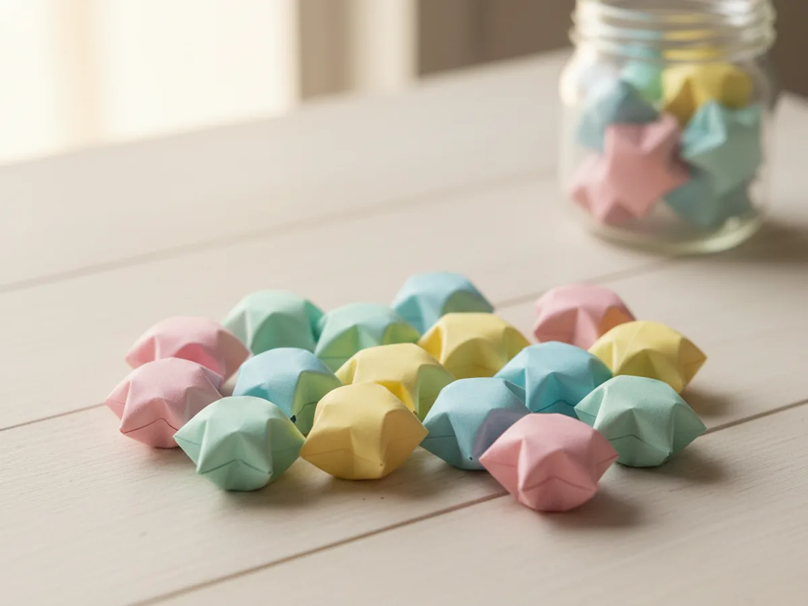
8. Origami Butterfly
This simple butterfly fold uses one square of patterned origami paper and finishes in around eight quick folds. Pinch the middle to give the wings a little lift so it looks like it's about to fly away. String several together with thin thread for a beautiful window mobile that flutters in the breeze.
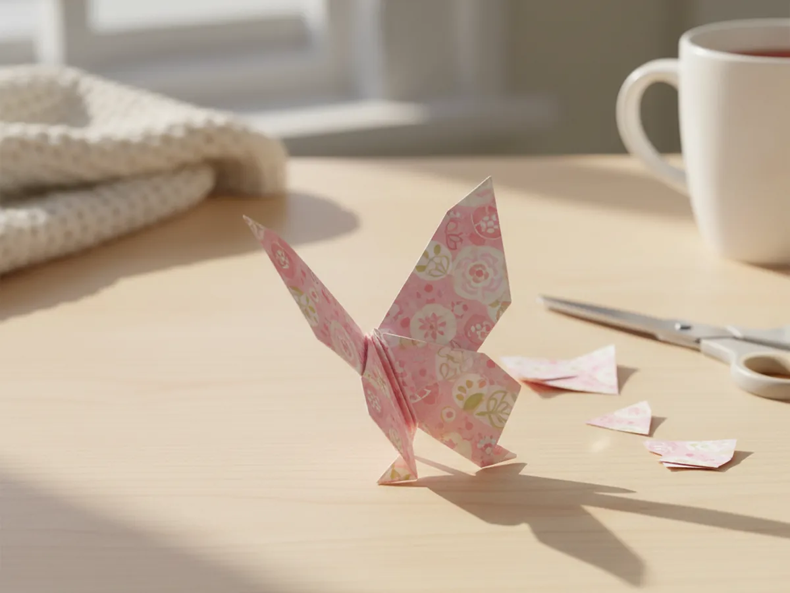
9. Origami Fish
Fold a colorful square into a chubby little fish with a forked tail, then add a tiny dot eye and a few marker scales. Kids love sticking these fish on a sheet of blue cardstock to create their own underwater scene. Origami fish are also lovely as decorations for a summer-themed birthday party.
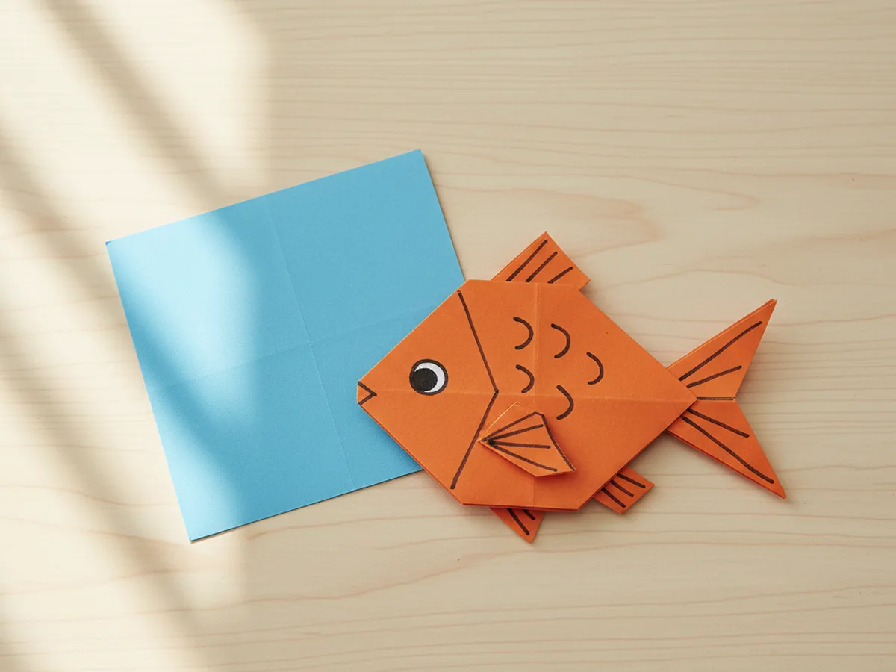
10. Paper Lantern (Chochin)
Fold a rectangle of red or yellow paper in half lengthwise, snip parallel strips along the folded edge, then unfold and roll it into a cylinder. Add a paper handle at the top and you have a charming little chochin lantern that looks straight out of a Tokyo street festival. These look gorgeous strung along a window or hung from a doorway.
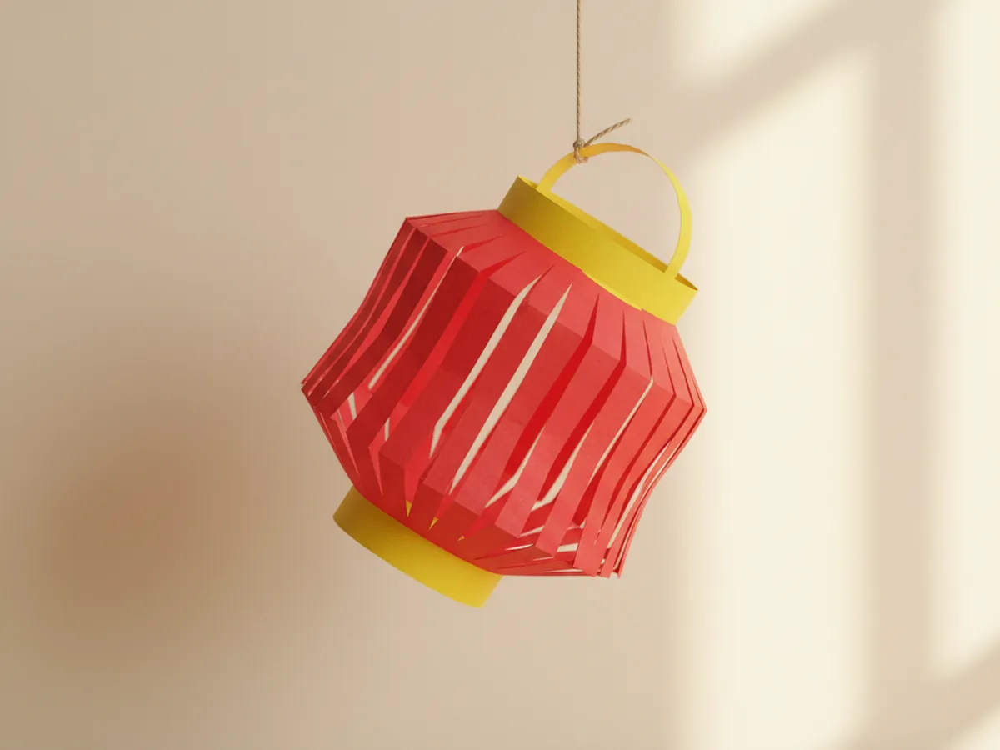
11. Cherry Blossom Garland
Cut small five-petal sakura shapes from soft pink and white paper, then thread them onto a long piece of string with tiny dots of glue. Drape the finished garland across a bookshelf or above the kitchen window for a soft springtime feel. This one is perfect for those mornings when you want a calm, quiet activity together. 🎌
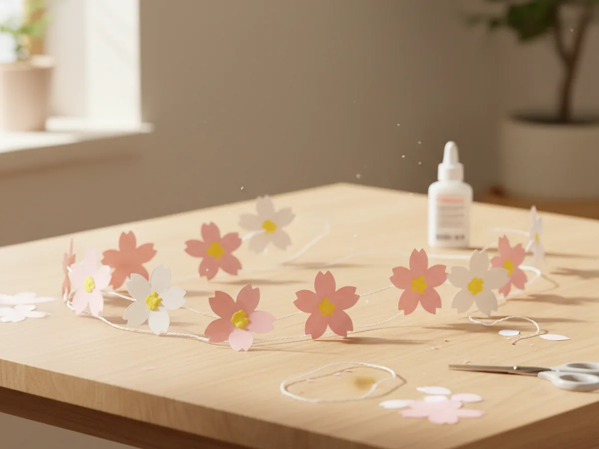
12. Washi Tape Bookmark
Cut a strip of cardstock to bookmark size and let your child layer colorful washi tape across it in stripes, dots, or fun patterns. Punch a hole at the top, thread a thin ribbon, and you have a sweet handmade bookmark in under ten minutes. Washi tape crafts like this one are the easiest entry point into Japanese-inspired paper art for younger kids.
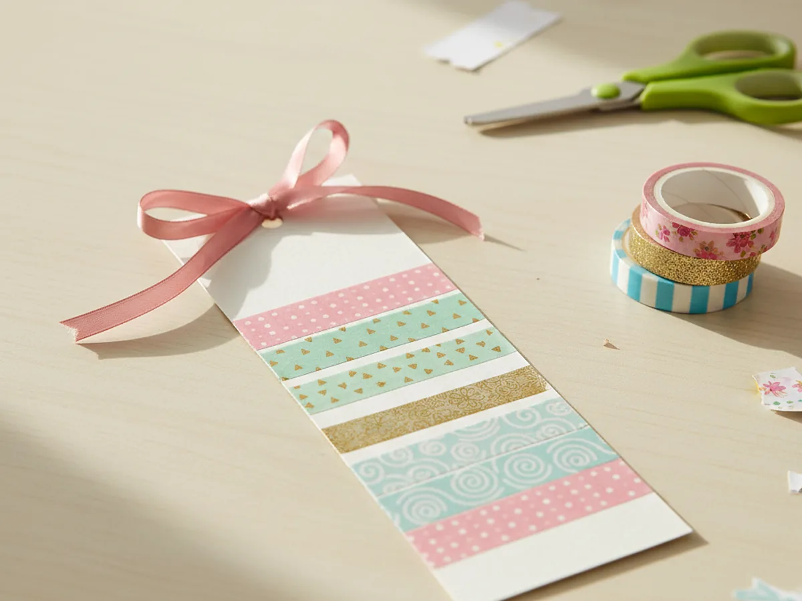
13. Japanese Paper Fan
Accordion-fold a long rectangle of patterned paper into neat pleats, pinch the bottom together, and tape it to hold the fan shape. A folded paper fan is the kind of Japanese paper craft for kids that pays off instantly because little hands love opening and closing it on a hot afternoon. Decorate the paper first with markers or washi tape for extra charm.
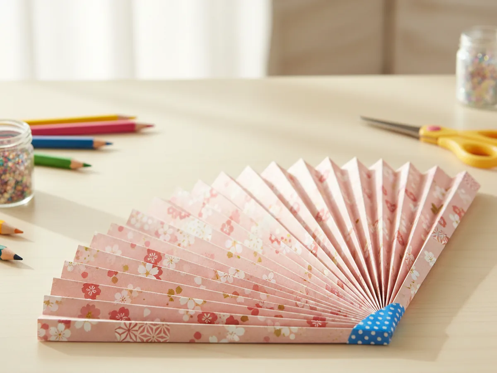
14. Koinobori Carp Streamer
Roll a rectangle of bright paper into a tube and tape the seam, then cut a V into one end for the tail and add scales with markers or paper circles. Tie a string at the open mouth and hang the koinobori in a window so it billows in the breeze. Japanese families fly these every May for Children's Day, which makes this a meaningful craft to share the story behind.
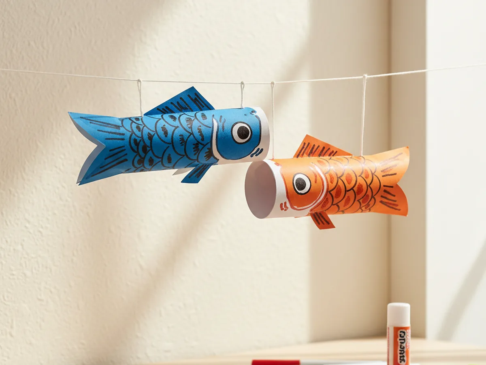
15. Origami House
This adorable two-step fold turns one square into a tiny flat house with a pointed roof and a square base. Let your child color in windows, a door, and a little garden out front. Line up a whole street of origami houses across the table and the pretend play practically writes itself.
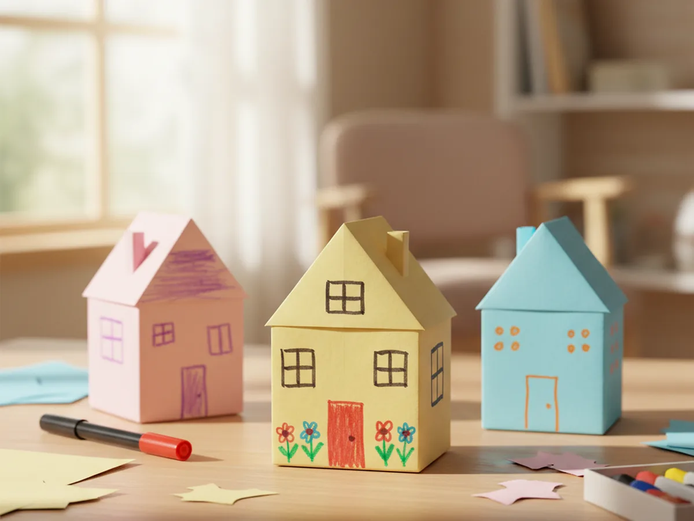
16. Paper Daruma Doll
Cut a round shape from red cardstock, glue on a smaller circle face, and add big bold eyes and an expressive painted mouth. The daruma is a Japanese symbol of perseverance, and tradition says you fill in one eye when you set a goal and the second eye when you reach it. Older kids will love the meaning behind their finished doll.
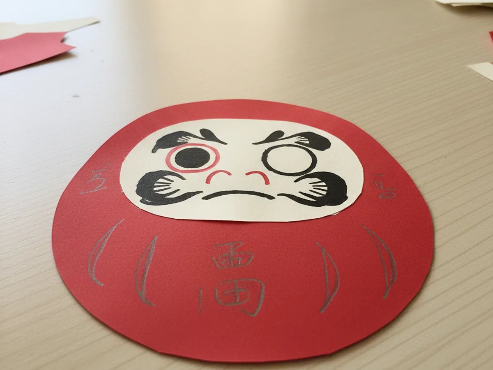
17. Origami Fortune Teller
Sometimes called a cootie catcher, this fold has been making kids giggle for decades. One square folds into a four-pocket finger puppet that tells silly fortunes when you flip its flaps. See our full fortune teller paper craft tutorial for the step-by-step folds and fun message ideas inside.
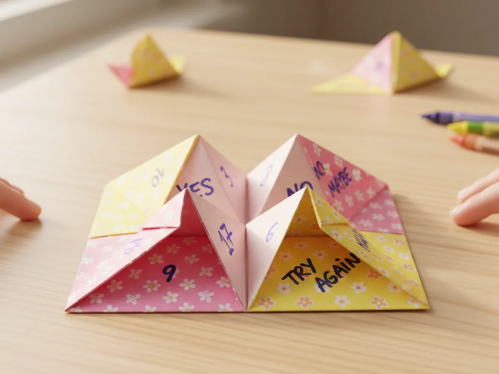
18. Paper Sumo Wrestlers
Cut two simple sumo wrestler silhouettes from cardstock and bend a small tab at the bottom so they can stand upright. Place them inside a shallow box lid arena and tap the sides to make them wobble and bump. The first wrestler to fall over loses, and kids will play this for ages.
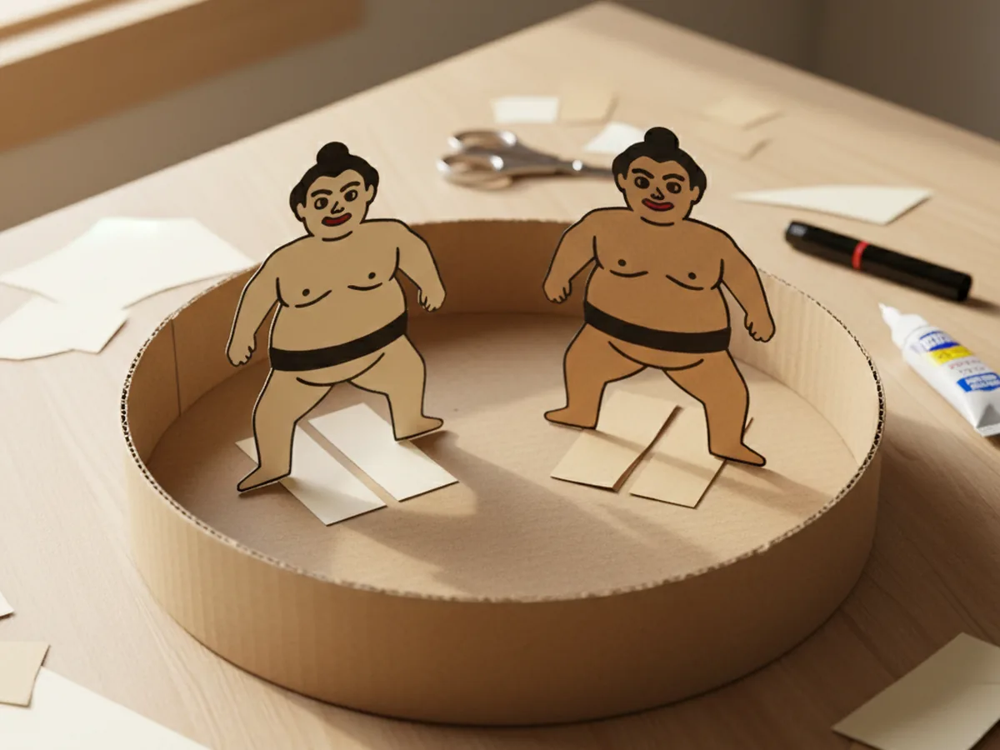
19. Paper Kokeshi Doll
A kokeshi is a sweet Japanese wooden doll with a round head, a cylindrical body, and a tiny painted face. Recreate the look using a rolled paper tube body, a paper circle head, and washi tape stripes for the kimono. Each child can give their kokeshi a name, a hairstyle, and a personality of her own.
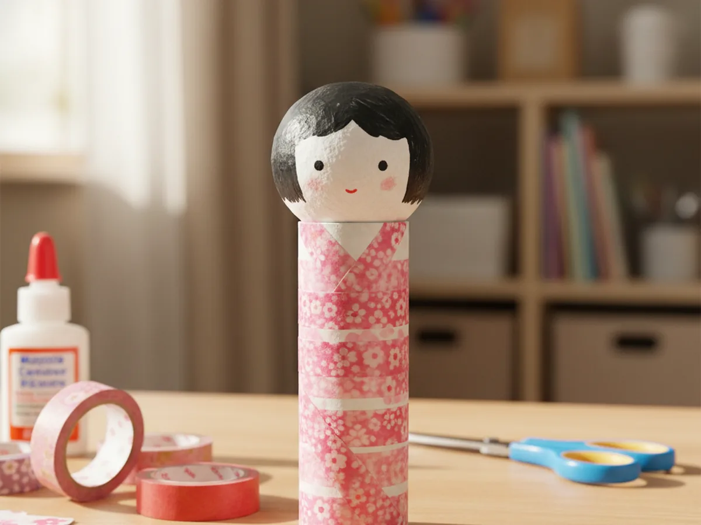
20. Origami Bookmark Corner
Fold a small square into a triangle pocket that slips right over the corner of a book page. Decorate the front like a tiny animal face, a watermelon slice, or a smiling sun. These are the most useful little origami paper craft projects on the list because kids actually use them every single day. ❤️
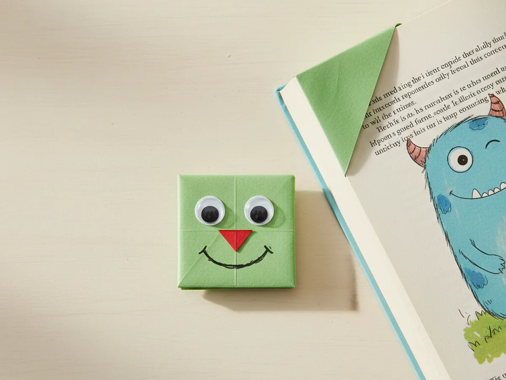
Final Thoughts
The reason a Japanese paper craft session feels so calming is that it slows everyone down for a few quiet minutes. Just one square of paper, a few simple folds, and a child paying close attention next to you, that's the whole magic. Pick one idea this week, try a few more next week, and let the little finished cranes and lanterns build up around the house as sweet reminders of your time together. 🎨
More Crafts You'll Love
If your kids are loving the folding and snipping, these two next reads pair beautifully with any Japanese-style craft afternoon.
- Easy Fortune Teller Paper Craft for Kids (8 Steps!)
- 20 Adorable Paper Arts and Crafts Kids Will Beg to Make Again and Again
Whichever fold you start with, the real prize is the moment your child holds up that finished little crane and beams. Happy folding, friend!